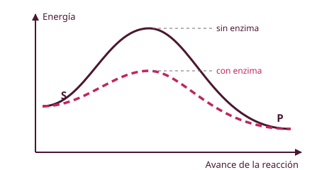
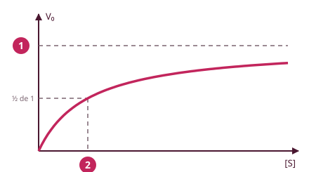
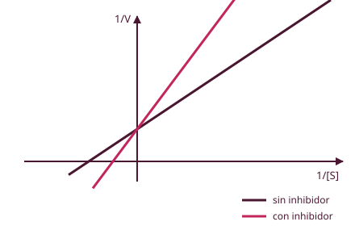
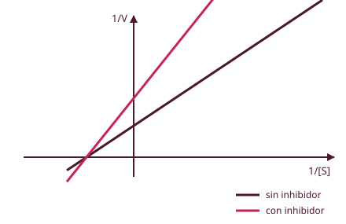
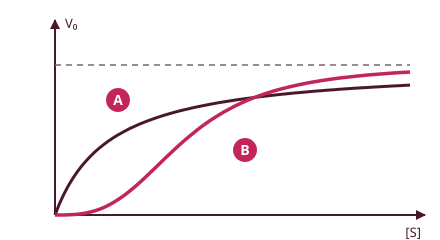

Las enzimas son catalizadores biológicos: sin ellas las reacciones serían lentísimas. Se unen al sustrato formando el complejo enzima-sustrato (ES), que da el producto, y la enzima se recupera. Tienen una vida media limitada. Casi todas son proteínas; las ribozimas son ARN con actividad catalítica.

Poder catalítico: son muy eficaces, no se consumen, rendimiento del 100 % y sin subproductos. Favorecen la proximidad y la orientación de los sustratos para alcanzar el estado de transición.
Nombres triviales (tripsina, pepsina), nombre del sustrato + -asa (ureasa, arginasa) o del tipo de reacción (lactato deshidrogenasa). Hoy todas tienen un código EC: EC + 4 números (clase, subclase, sub-subclase y número de orden). El primero, la clase, hay que saberlo.
| Clase | Reacción |
|---|---|
| 1 · Oxidorreductasas | Oxidación-reducción (deshidrogenasas) |
| 2 · Transferasas | Transferencia de grupos (quinasas, transaminasas) |
| 3 · Hidrolasas | Hidrólisis: transfieren grupos al agua |
| 4 · Liasas | Añaden o quitan grupos formando dobles o triples enlaces |
| 5 · Isomerasas | Isomerización (transferencia intramolecular) |
| 6 · Ligasas | Unen dos sustratos gastando ATP |
| 7 · Translocasas | Mueven iones o moléculas a través de membranas |
Enzima y sustrato encajan de forma rígida y complementaria.
Son compatibles pero no complementarios: se amoldan al interaccionar.
Postulados de Michaelis y Menten: con [S] constante, la velocidad es proporcional a la [E]; con [E] constante, la relación V-[S] es hiperbólica y llega a una meseta (Vmáx) cuando la enzima se satura.

Reversible (unión no covalente, transitoria) o irreversible (unión covalente, indefinida).
| Tipo | Dónde se une el inhibidor | Km | Vmáx |
|---|---|---|---|
| Competitiva | Centro activo (se parece al sustrato y compite con él) | Aumenta | No cambia |
| No competitiva | Otro sitio; el sustrato se sigue uniendo pero la catálisis es peor | No cambia | Disminuye |
| Acompetitiva | Solo al complejo ES (distorsiona el centro activo) | Varía | Disminuye |


Inhibidor suicida: se une covalentemente. Útil: la penicilina inhibe la transpeptidasa bacteriana. Perjudicial: compuestos mercuriales (grupos -SH de la cisteína), cianuro (metales de la cadena respiratoria) y gas sarín (inhibe la acetilcolinesterasa).
Principio de máxima economía: se regula según las necesidades (relación ATP/ADP y NADH/NAD⁺). Se regula la etapa limitante (suele ser el primer paso o un punto de ramificación).
«Alo» = el otro: un efector (inhibidor o estimulador) se une en un sitio distinto del centro activo y el cambio de conformación se transmite. Suelen ser oligoméricas con cooperatividad (la unión a un protómero afecta a los demás) y cinética sigmoidea.

Formas estructurales distintas que catalizan la misma reacción. Ejemplo: la lactato deshidrogenasa (LDH), tetrámero de subunidades H (se inhibe por piruvato) y M (no se inhibe).
| Isoenzima | Dónde predomina |
|---|---|
| LDH-1 (H4) | Miocardio, riñón, eritrocitos |
| LDH-2 (H3M) | Miocardio, riñón, eritrocitos, leucocitos |
| LDH-3 (H2M2) | Riñón, leucocitos, cerebro |
| LDH-4 (HM3) | Leucocitos |
| LDH-5 (M4) | Hígado y músculo esquelético |
Apoenzima (inactiva) + cofactor = holoenzima (activa). Los cofactores pueden ser inorgánicos (iones metálicos) u orgánicos (coenzimas, muchas de vitaminas hidrosolubles).
Vitaminas: orgánicas, no se sintetizan (o no lo suficiente), se necesitan en poca cantidad y su carencia causa enfermedad.
Se absorben con las grasas, se almacenan en hígado y tejido graso, se eliminan poco por orina, pueden ser tóxicas y su carencia tarda en notarse.
Se absorben rápido, se almacenan muy poco y se eliminan por el riñón (sus niveles caen rápido).
| Vitamina | Coenzima | Función |
|---|---|---|
| B1 (tiamina) | Tiamina pirofosfato (TPP) | Descarboxilaciones (piruvato DH) |
| B2 (riboflavina) | FMN, FAD | Óxido-reducción |
| B3 (niacina) | NAD⁺, NADP⁺ | Óxido-reducción |
| B5 (pantoténico) | Coenzima A | Transferencia de grupos acilo |
| B6 (piridoxina) | Piridoxal fosfato (PLP) | Aminoácidos: transaminación, descarboxilación… |
| B8 (biotina) | Biocitina | Carboxilaciones |
| B9 (fólico) | Tetrahidrofolato (THF) | Fragmentos de un carbono |
| B12 (cobalamina) | Desoxiadenosil- y metilcobalamina | Isomerizaciones y metilos |
| C (ascórbico) | Ascorbato | Reductor en hidroxilaciones |
| Ácido lipoico (no es vitamina) | Lipoamida | Acilos y óxido-reducción |